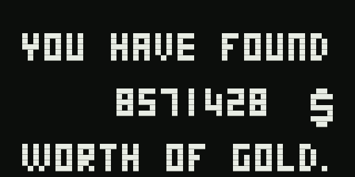
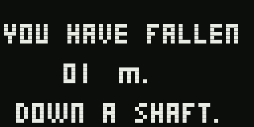

Gold Fever
Bruce Mitchell · DREAMER no. 10 (1981-06) p. 19 1K RAM


An educational game for young children that teaches compass directions and coordinates. A 9x9 grid is drawn with a lode of gold hidden on it. You enter coordinates and follow the directions shown, taking care to avoid old mine shafts.
Keys
Digits 1-9: horizontal coordinate, then vertical coordinate.
Files
| File | Version | Load | Run |
|---|---|---|---|
| Gold Fever.d68 | main | 0080-03FF | C000 |
Listing as transcribed (with notes): gold_fever.txt
Source
DREAMER no. 10 on archive.org, p. 19 (PDF page 21). Author: Bruce Mitchell.
Corrections applied
None.
Open doubts
- Routine 00CD-00FA is never called; left as printed.